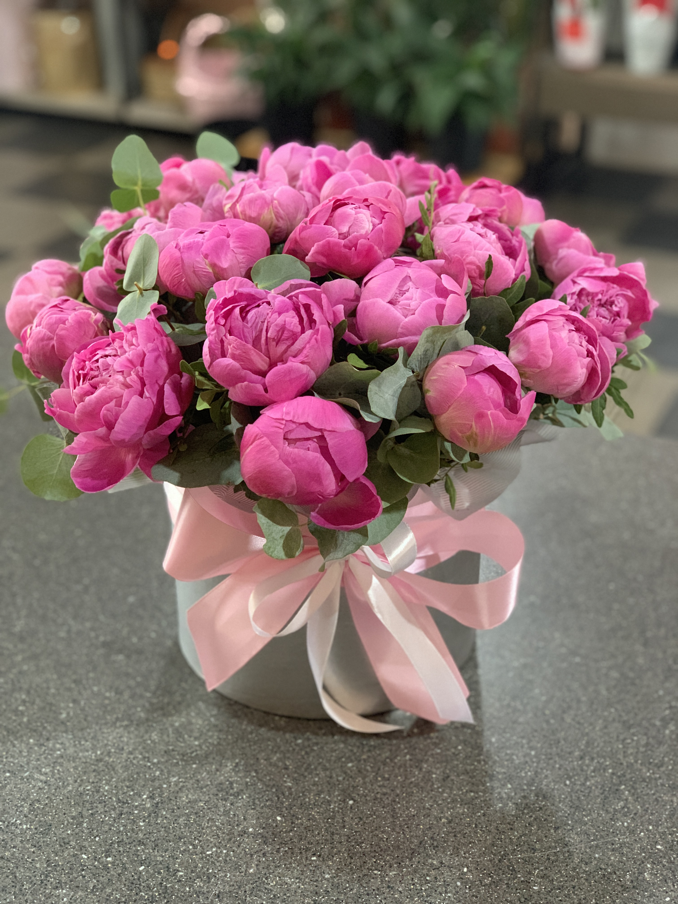
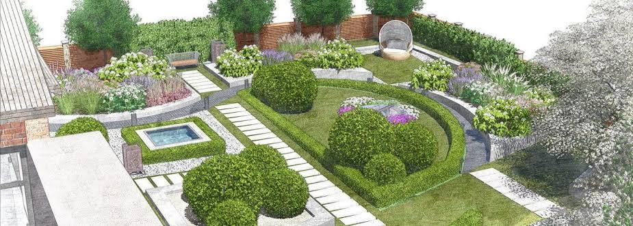
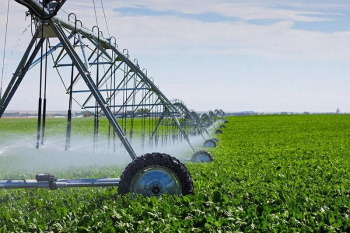
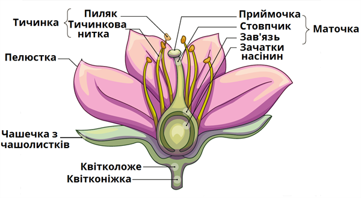
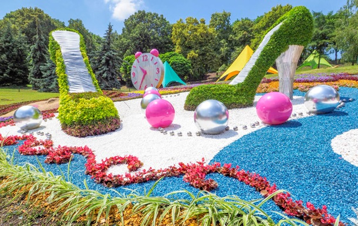
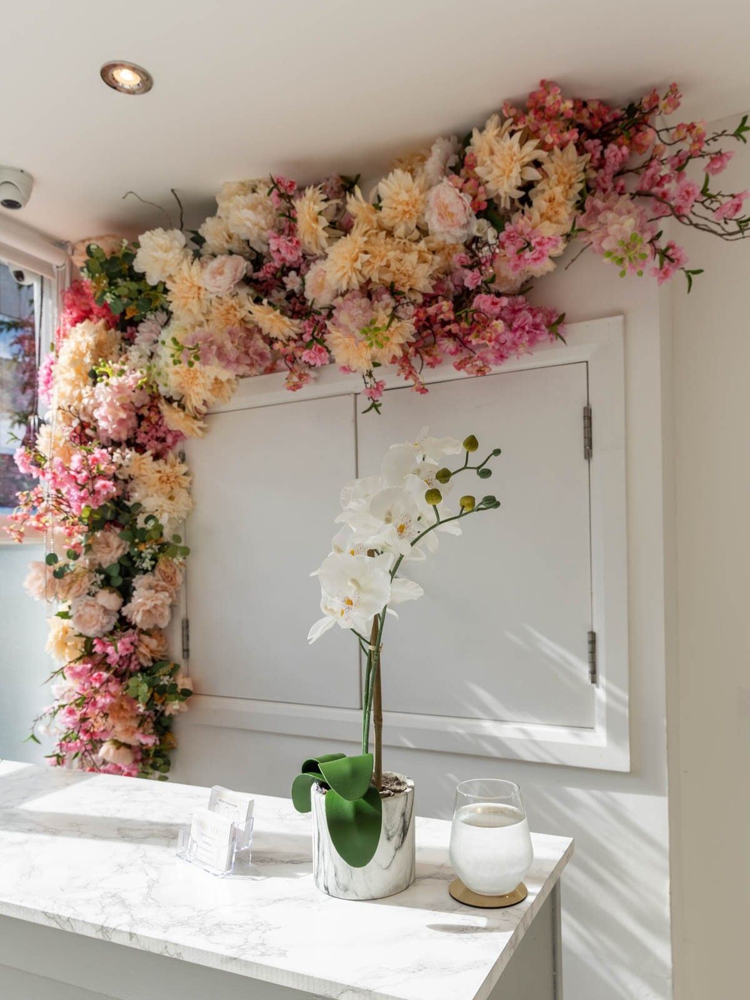
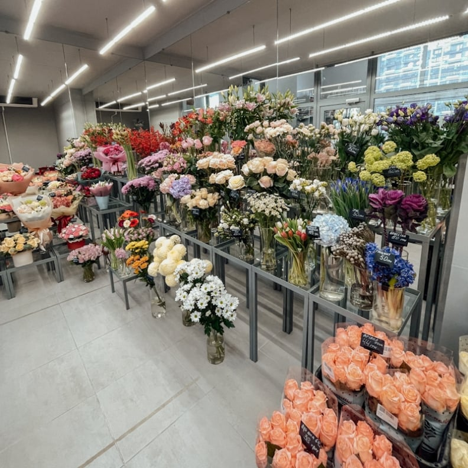

| 1 |
Вирощування квітів |
 |
Декоративні та рідкісні рослини, МінАПК |
| Озеленення міст |
 |
Парки, сквери, алеї, Міськрада |
| 2 |
Експорт рослин |
|
Постачання за кордон |
Мінекономіки |
| 3 |
Соціальні програми |
 |
Квіти для лікарень та шкіл, МОЗ, МОН |
| 4 |
Наукові дослідження |
 |
Селекція нових сортів |
НАН України |
| 5 |
Організація виставок |
 |
Щорічні квіткові ярмарки |
Мінкультури |
| 6 |
Ландшафтний дизайн |
 |
Садово-паркове мистецтво |
Мінрегіон |
| 7 |
Екологічні ініціативи |
|
Програми збереження природи, Міндовкілля |
| Освітні програми |
|
Курси флористики та агрономії, МОН |
| 8 |
Продаж у роздріб |
 |
Фірмові квіткові магазини, Податкова служба |
| 9 |
Консалтинг у флористиці |
|
Навчальні та консультаційні послуги |
МОН, НАН України |
| 10 |
Організація майстер-класів |
 |
Практичне навчання та курси |
МОН |